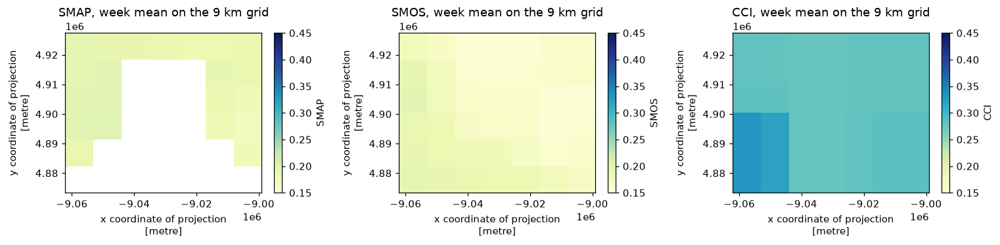

A daily SMAP L3 Enhanced file is about 660 MB of global data; a SMOS-SMAP file is 1.6 GB. For a study area the size of Iowa only a few thousand of the millions of cells are needed. This notebook shows how GeoLattice reaches each product without downloading the world: NASA OPeNDAP subsetting for SMAP L3, the Harmony subsetting service for SMAP L4, HTTP range reads of uncompressed HDF5 for SMOS, the CEDA THREDDS server for ESA CCI, the Open-Meteo archive for ERA5-Land and the Planetary Computer STAC catalogue for Sentinel-1. Every reader returns a tidy xarray.Dataset, and the chapter helper sm_data caches each cube so that later notebooks load it in one line.
Overview
Accounts and credentials
Source
Account
Where the credential lives
NASA Earthdata (NSIDC, ASF, GES DISC)
free Earthdata Login
~/.netrc (machine urs.earthdata.nasa.gov login ... password ...) or EARTHDATA_USERNAME/EARTHDATA_PASSWORD
Credentials never go into a notebook. Some NASA data centres (GES DISC, for AMSR2 LPRM and GLDAS) also require approving their application once in the Earthdata Login profile.
Ways to read only what is needed
Method
How it works
Used for
OPeNDAP (DAP4)
the server cuts an array by index ranges and returns a small NetCDF
SMAP L3 and L3 Enhanced
Harmony
NASA’s asynchronous subsetting service: one job subsets hundreds of granules by bbox and variable
SMAP L4
HTTP range reads
h5py on a remote file object reads only the bytes of the requested rows (works for uncompressed or small-chunked HDF5)
SMOS-SMAP (NSIDC-0800)
THREDDS (DAP2)
constrained ASCII requests per daily file
ESA CCI
Web API
JSON time series at grid points
ERA5-Land (Open-Meteo)
STAC plus cloud-optimized GeoTIFF
catalogue search, then windowed reads of COGs
Sentinel-1 RTC, Sentinel-2, MODIS, DEM, land cover
EASE-Grid 2.0
SMAP and SMOS-SMAP use the global cylindrical EASE-Grid 2.0 (EPSG:6933): an equal-area grid whose cells are exactly 36.03, 9.008, 3.003 or 1.001 km wide and whose origin is the centre of the map. A cell’s row and column follow from the projected coordinates, so an AOI is a block of rows and columns, which is what OPeNDAP needs.
Data Access with GeoLattice
Function
Purpose
sm.search_product(name, aoi, dates)
granules of a product (CMR for NASA, daily URLs for ESA CCI)
sm.open_product(name, aoi, dates, cache=)
subset and read in one call, optionally cached
sm.ease2_grid, sm.ease2_index
EASE-Grid 2.0 coordinates and cell indices
sm.read_era5_land
ERA5-Land soil water from Open-Meteo
sm.daily_cube, sm.harmonize
merge overpasses, regrid products onto one grid
sm.to_cache
NetCDF, Zarr or COG output
Learning objectives
Find granules of NASA soil moisture products and read their metadata.
Compute EASE-Grid 2.0 rows and columns for an AOI and for station points.
Read one week of SMAP, SMOS, ESA CCI and ERA5-Land for Iowa, transferring only the AOI.
Merge AM and PM overpasses and put several products on one grid.
Write cubes to NetCDF, Zarr and cloud-optimized GeoTIFF.
Data
Dataset
Content
SMAP L3 Enhanced, SMOS-SMAP (NSIDC-0800), ESA CCI COMBINED, ERA5-Land
first week of June 2024 over the central Iowa field site
Sentinel-1 RTC catalogue
scenes over the field site in 2019
Contents
Setup
Finding granules
EASE-Grid 2.0 cells of the study area
One week of four products
Merging overpasses and regridding
Writing NetCDF, Zarr and COG
The chapter cache
Summary and exercises
Setup
Code
import warnings # warning controlwarnings.filterwarnings("ignore") # hide routine library warningsfrom pathlib import Path # file pathsimport matplotlib.pyplot as plt # figuresimport numpy as np # arraysimport pandas as pd # tablesimport rioxarray # noqa: F401 (registers the .rio accessor)import xarray as xr # labelled rastersimport geolattice # GeoLatticeimport geolattice.rsense.soil_moisture as sm # soil moisture physics, products, retrieval and validationimport sm_data as sd # chapter helper: subsets, downloads and caches the dataplt.rcParams.update({"figure.dpi": 110}) # figure resolutionOUT = Path("outputs") # results written by this chapterOUT.mkdir(exist_ok=True) # create it if neededprint("GeoLattice", geolattice.__version__, "| data folder", sd.DATA.relative_to(sd.DATA.parents[3])) # versions and pathsimport time # timingAOI = sd.IOWA["bbox"] # central Iowa field site (lon/lat)WEEK = ("2024-06-01", "2024-06-07") # one weekprint("AOI", AOI) # area
sm.search_product queries CMR through earthaccess (the login is read from ~/.netrc). Each granule record has its file name, size, time and links, including the OPeNDAP endpoint.
Code
gran = {name: sm.search_product(name, AOI, WEEK) for name in ("SMAP_L3_E", "SMAP_L4", "SMOS_SMAP_L3")} # one week eachfor name, g in gran.items(): # summary per product sizes = [x.size() for x in g] # file sizes (MB)print(f"{name:13s}{len(g):3d} granules, {np.mean(sizes):7.1f} MB each, first: {g[0]['umm']['GranuleUR']}") # counts and sizeslinks = [u["URL"] for u in gran["SMAP_L3_E"][0]["umm"]["RelatedUrls"] if u["URL"].startswith("https")] # access linksprint("\n".join(links[:4])) # direct download, metadata and OPeNDAP
A week of SMAP L3 Enhanced is seven global files of 656 MB; SMAP L4 is 57 files (eight 3-hourly analyses per day) of 144 MB; SMOS-SMAP is seven files of 1.6 GB. Downloading them for an AOI of 42 cells would move about 24 GB for a few kilobytes of data.
EASE-Grid 2.0 cells of the study area
Code
g9 = sm.ease2_grid("EASE2_M09km", aoi=AOI) # 9 km cells covering the AOIg36 = sm.ease2_grid("EASE2_M36km", aoi=AOI) # 36 km cellsprint(f"9 km: rows {int(g9.row.min())} to {int(g9.row.max())}, cols {int(g9.col.min())} to {int(g9.col.max())} ({g9.sizes['y']} x {g9.sizes['x']} cells)") # windowprint(f"36 km: {g36.sizes['y']} x {g36.sizes['x']} cells") # coarse windowr, c = sm.ease2_index(sd.STATIONS.lat.values, sd.STATIONS.lon.values, "EASE2_M09km") # station cellsdisplay(sd.STATIONS.assign(row_9km=r, col_9km=c)) # station positions on the grid
9 km: rows 265 to 270, cols 922 to 928 (6 x 7 cells)
36 km: 2 x 3 cells
network
id
lon
lat
row_9km
col_9km
station
USCRN Des Moines 17 E
USCRN
IA_Des_Moines_17_E
-93.28610
41.5564
272
928
SCAN Ames
SCAN
2031:IA:SCAN
-93.72977
42.0136
267
924
One week of four products
Each call transfers only the AOI. The timings include the server work.
Code
cubes, rows = {}, [] # cubes and timing tablefor name, kw in (("SMAP_L3_E", {}), ("SMOS_SMAP_L3", {"variables": ("soil_moisture", "retrieval_qual_flag")}), ("ESA_CCI", {"product": "COMBINED"})): # three gridded products t0 = time.time() # start cubes[name] = sm.open_product(name, AOI, WEEK, **kw) # subset and read rows.append({"product": name, "seconds": round(time.time() - t0, 1), "dims": dict(cubes[name].sizes),"MB in memory": round(cubes[name].nbytes /2**20, 2)}) # what came backt0 = time.time() # ERA5-Land at the two stationscubes["ERA5_LAND"] = sm.read_era5_land(None, WEEK, points=list(zip(sd.STATIONS.lon, sd.STATIONS.lat))) # three layersrows.append({"product": "ERA5_LAND (2 points)", "seconds": round(time.time() - t0, 1), "dims": dict(cubes["ERA5_LAND"].sizes),"MB in memory": round(cubes["ERA5_LAND"].nbytes /2**20, 3)}) # timingdisplay(pd.DataFrame(rows).set_index("product")) # summaryprint(cubes["SMAP_L3_E"]) # the SMAP cube: time, overpass, y, x
seconds
dims
MB in memory
product
SMAP_L3_E
6.7
{'time': 7, 'overpass': 2, 'y': 6, 'x': 7}
0.02
SMOS_SMAP_L3
73.5
{'time': 7, 'overpass': 2, 'y': 6, 'x': 7}
0.00
ESA_CCI
1.1
{'time': 7, 'lat': 2, 'lon': 3}
0.00
ERA5_LAND (2 points)
0.9
{'time': 7, 'point': 2}
0.00
<xarray.Dataset> Size: 17kB
Dimensions: (time: 7, overpass: 2, y: 6, x: 7)
Coordinates:
* time (time) datetime64[us] 56B 2024-06-01 ... 2024-0...
* overpass (overpass) <U2 16B 'AM' 'PM'
* y (y) float64 48B 4.923e+06 4.914e+06 ... 4.878e+06
row (y) int64 48B 265 266 267 268 269 270
* x (x) float64 56B -9.058e+06 ... -9.004e+06
col (x) int64 56B 922 923 924 925 926 927 928
lat (y, x) float64 336B 42.23 42.23 ... 41.76 41.76
lon (y, x) float64 336B -93.87 -93.78 ... -93.31
spatial_ref int64 8B 0
Data variables:
sm (time, overpass, y, x) float32 2kB 0.2411 ... nan
retrieval_qual_flag (time, overpass, y, x) uint16 1kB 0 0 0 ... 7 7 7
surface_flag (time, overpass, y, x) uint16 1kB 0 0 ... 2047
vegetation_water_content (time, overpass, y, x) float32 2kB 1.95 ... nan
vegetation_opacity (time, overpass, y, x) float32 2kB 0.007522 ......
surface_temperature (time, overpass, y, x) float32 2kB 292.7 ... nan
tb_v_corrected (time, overpass, y, x) float32 2kB 247.7 ... nan
tb_h_corrected (time, overpass, y, x) float32 2kB 213.1 ... nan
Attributes:
product: SMAP_L3_E
short_name: SPL3SMP_E
version: 006
grid: EASE2_M09km
units: m3 m-3
The SMAP cube has time, overpass (AM descending at 6 am local time, PM ascending at 6 pm), y and x in EPSG:6933, with soil moisture as sm and the quality flags and ancillary layers that the retrieval used. A week of data is about 20 kB in memory; the OPeNDAP subset of SMAP took about 7 seconds and the range reads of the 1.6 GB SMOS-SMAP files about 75 seconds.
Merging overpasses and regridding
sm.daily_cube keeps the AM retrieval and fills it with PM where the morning is missing (the morning is preferred because the soil and canopy temperatures are closest then). sm.harmonize puts products on one grid; here everything goes onto the 9 km EASE grid, with area averaging.
Code
smap = sm.daily_cube(sm.mask_quality(cubes["SMAP_L3_E"])) # recommended quality, AM firstsmos = sm.daily_cube(sm.mask_quality(cubes["SMOS_SMAP_L3"])) # same for SMOSused = smap.overpass_used.where(smap.overpass_used >=0) # 0 = AM, 1 = PMprint(f"SMAP cells filled from PM: {float((used ==1).sum() / used.notnull().sum()):.0%}") # share of PMh = sm.harmonize({"SMAP": smap.sm, "SMOS": smos.sm, "CCI": cubes["ESA_CCI"].sm}, target=smap.sm) # one griddisplay(h.mean(("y", "x")).to_dataframe()[["SMAP", "SMOS", "CCI"]].round(3)) # AOI means per dayfig, ax = plt.subplots(1, 3, figsize=(14, 3.5)) # maps on the common gridfor a, v inzip(ax, ("SMAP", "SMOS", "CCI")): # each product h[v].mean("time").plot(ax=a, vmin=0.15, vmax=0.45, cmap="YlGnBu"); a.set_title(f"{v}, week mean on the 9 km grid") # mapplt.tight_layout(); plt.show() # draw
SMAP cells filled from PM: 20%
SMAP
SMOS
CCI
time
2024-06-01
0.226
0.181
0.282
2024-06-02
NaN
0.132
0.283
2024-06-03
0.157
NaN
0.278
2024-06-04
0.154
0.155
0.275
2024-06-05
0.190
NaN
0.304
2024-06-06
0.226
0.220
0.311
2024-06-07
NaN
0.173
0.273

On the common 9 km grid SMAP and SMOS give similar AOI means (0.15 to 0.23 m3 m-3) on the days both observed, and they fill each other’s gaps; ESA CCI, rescaled to a land model climatology, is about 0.08 m3 m-3 wetter. A fifth of the SMAP cells came from the evening pass.
Writing NetCDF, Zarr and COG
NetCDF suits whole cubes, Zarr suits large cubes read in chunks, and cloud-optimized GeoTIFFs suit single maps that GIS software and web viewers read directly.
Code
out = OUT /"access_demo"# demo folderpaths = {fmt: sm.to_cache(smap[["sm"]], str(out /f"smap_week.{ext}"), fmt=fmt) for fmt, ext in (("netcdf", "nc"), ("zarr", "zarr"), ("cog", "cog"))} # three formatsfor fmt, p in paths.items(): # sizes on disk size =sum(f.stat().st_size for f in Path(p).rglob("*") if f.is_file()) if Path(p).is_dir() else Path(p).stat().st_size # bytesprint(f"{fmt:7s}{p}{size /1024:.0f} kB") # path and sizeprint(xr.open_dataset(paths["netcdf"]).sm.sizes) # read back
sm_data.py wraps these calls with fixed study areas and periods and caches each cube under Data/08_remote_sensing/08_13_soil_moisture/. The first call of, for example, sd.smap_l3e() subsets ten years of daily SMAP over the Midwest (about 3,900 OPeNDAP requests, half an hour); afterwards it opens in a second.
Code
files =sorted(p for p in sd.DATA.rglob("*") if p.is_file()) # cached filescache = pd.DataFrame({"file": [str(p.relative_to(sd.DATA)) for p in files], "MB": [round(p.stat().st_size /2**20, 1) for p in files]}) # tabledisplay(cache) # what the chapter has cached so farprint(f"total {cache.MB.sum():.0f} MB") # size of the cache
file
MB
0
boundaries/cb_2023_us_county_500k.zip
11.1
1
boundaries/geoboundaries_BGD_ADM0.geojson
0.1
2
boundaries/geoboundaries_BGD_ADM2.geojson
1.6
3
cci/cci_active_iowa_2015_2024.nc
8.0
4
cci/cci_combined_bangladesh_1979_2024.nc
27.6
5
cci/cci_combined_iowa_2015_2024.nc
7.8
6
cci/cci_passive_iowa_2015_2024.nc
8.0
7
era5_land/era5land_bangladesh_2010_2024_1.0deg...
0.5
8
era5_land/era5land_iowa_2015_2025_0.5deg_l1.nc
1.4
9
era5_land/era5land_stations_2015_2025.nc
0.1
10
gridmet/gridmet_-93.600_42.000_2015_2025_pr_pe...
0.1
11
in_situ/scan_2031_IA_SCAN_2015_2025.csv
0.6
12
in_situ/uscrn_IA_Des_Moines_17_E_2015_2025.csv
6.5
13
in_situ/usgs_05470000_2015_2025.csv
0.1
14
modis/ndvi_iowa_2024-01-01_2024-12-31.nc
1.2
15
sentinel1/s1_iowa_2019_2021_50m.nc
792.0
16
smap/spl3smp_e_midwest_2015_2025.nc
298.4
17
smap/spl3smp_iowa_2024_2024.nc
1.5
18
smapvex16/SMAPVEX16_IA_GVSM_GPS_IOP1.csv
0.0
19
smapvex16/SMAPVEX16_IA_GVSM_GPS_IOP2.csv
0.0
20
smapvex16/SMAPVEX16_IA_GVSM_v0_ThetaProbe.csv
0.3
21
smapvex16/SMAPVEX16_IA_TempNet_v0.csv
1.8
22
soilgrids/grid_iowa_0-5cm.nc
0.3
23
soilgrids/grid_iowa_region_0-5cm.nc
0.3
24
soilgrids/grid_iowa_sar_0-5cm.nc
0.7
25
soilgrids/profile_2031_IA_SCAN.csv
0.0
26
soilgrids/profile_IA_Des_Moines_17_E.csv
0.0
27
static/static_iowa_sar_50m.nc
5.7
total 1176 MB
Summary and exercises
Global soil moisture files are hundreds of megabytes to gigabytes per day, but an AOI needs only kilobytes; OPeNDAP, Harmony, HTTP range reads and THREDDS each deliver just the AOI.
EASE-Grid 2.0 rows and columns follow directly from EPSG:6933 coordinates.
sm.open_product returns tidy cubes with quality layers; sm.daily_cube and sm.harmonize make products comparable on one daily grid.
NetCDF, Zarr and COG serve different uses; the chapter cache makes every later notebook fast.
Exercises
Time sm.open_product("SMAP_L3_E", ...) for a box twice as wide. Does the time grow with the area or with the number of days?
Read one week of SMAP L4 with sm.open_product("SMAP_L4", AOI, WEEK, hours=("013000", "133000")) and plot the diurnal difference of surface soil moisture.
Find all Sentinel-1 RTC scenes over the AOI in 2019 with geolattice.rsense.access.stac_search and count them by relative orbit.